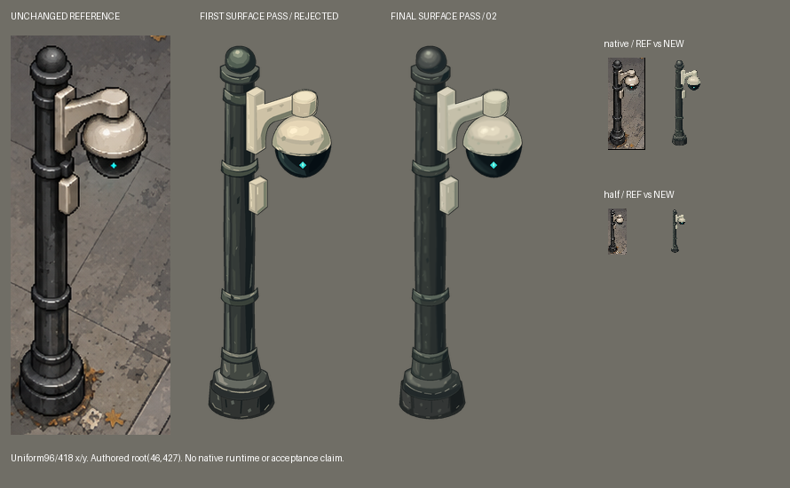
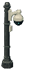
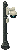

Final second surface-only pass. First proposal is NOT RECOMMENDED, preserved unchanged. No third pass. Original benchmark and both earlier procedural attempts remain immutable. No source acceptance, native execution, states/clips or integration. A first technical failure is preserved in attempt-01-initial/. Technical tests do not establish visual fidelity.
Exact grayscale plate · Unchanged full reference



Uniform x/y scale 96/418, half uses half that scale. Transparent padding yields 42×104 and 21×52 canvases. Authored ground root (46,427), not an alpha-derived gameplay/field anchor.
Live SVG inspection below reconstructs authored contours and paint paths, not bitmap fragments. It may differ from canonical Pillow antialiasing. Color/opacity controls change one named paint surface only, not its geometry. These are temporary inspection edits, not saved source changes. Edit surfaces-final.py for reproducible source changes.
Editable named SVG · 100-surface census · Hashes · Preserved first technically deficient preview